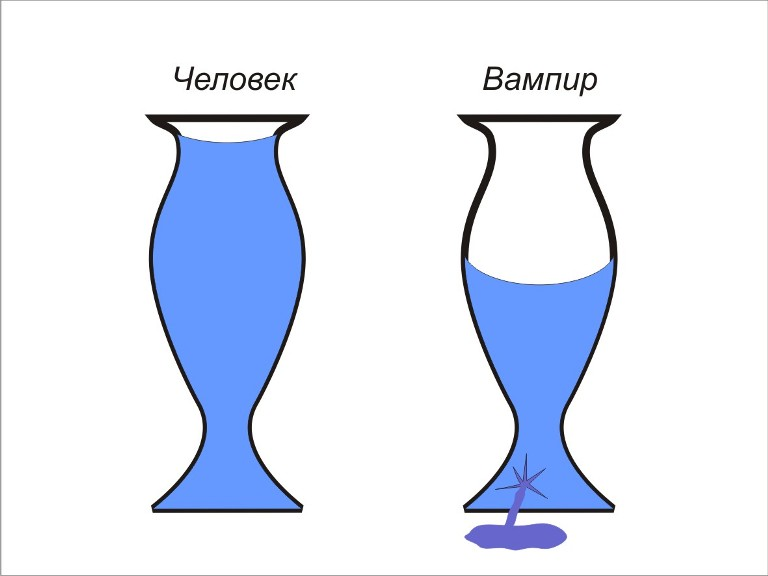
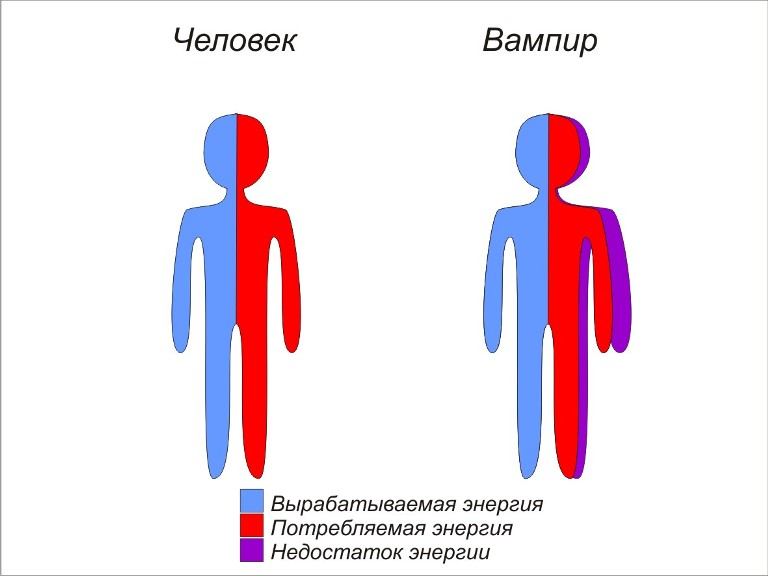
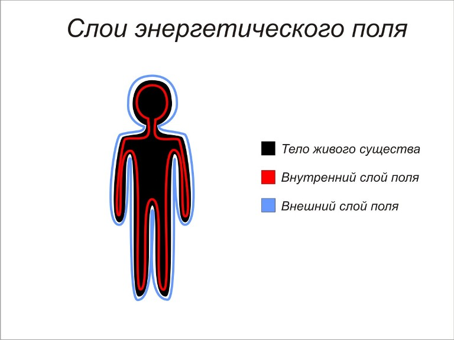
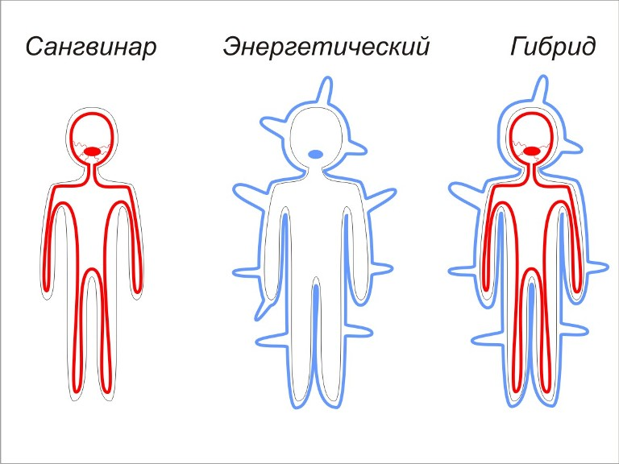

Гипотеза природы вампиризма
Прежде, чем написать это, я прочла множество статей, выслушала множество мнений и ознакомилась с сотнями, если не с тысячами, комментариев по предмету моих размышлений.
В местах, где мне не нужно разделять нас на сангвинаров, энергетических и гибридов, я буду писать просто «вампиры». Надеюсь, это никого не обидит.
Больше всего меня интересуют две теории нашей природы. Первая – я называю её «старая» – заключается в том, что каждый из нас, будь то человек или вампир – может быть представлен как некоторый сосуд, наполненный энергией. Сосуд человека всегда полон, ибо, когда энергия из него «испаряется», он способен восполнить её отсутствие. Но сосуд вампира имеет трещину или дыру, через которую его энергия также уходит. Поэтому вампир чувствует себя плохо (ибо энергии для нормального функционирования организма не хватает), и начинает ощущать Жажду Крови/Энергии.

Правда, эта теория не объясняет, почему сангвинары продолжают жить, когда не питаются очень долгое время, к примеру, несколько лет – ведь столь продолжительный недостаток энергии должен привести их к смерти. Несмотря на это, их организм функционирует, хотя и с некоторыми трудностями. Поэтому, я думаю, и была создана вторая теория – «новая». По ней вампиры, как и люди, могут производить энергию. Однако человек, производя, к примеру, 50 единиц энергии, тратит на поддержание своей жизни 50 же. А вампир, производя 50, потребляет 70. Из-за нехватки 20 единиц появляется её недостаток и, как следствие, Жажда. Поэтому появляется вполне закономерный вопрос – на что же вампир тратит эти 20 единиц?

Во многих статьях говорится о том, чем вампир превосходит человека. Способность к более быстрой регенерации, жизненная стойкость, выносливость, способность видеть при минимальном освещении и, наконец, некоторые возможности, которые люди обычно называют паранормальными. Я думаю, что те 20 единиц, о которых говорилось выше, тратятся как раз на них. Поэтому можно предположить, что, если вампир не будет использовать ни одну из своих «способностей», дисбаланса энергии не возникнет и Жажда не проявится. Вспомните: для Пробуждения требуется некоторое событие, ведущее за собой сильный эмоциональный всплеск. Так что же, если это событие заставляет ничего не подозревающего пока ещё человека задействовать латентные способности вампира, к которым он предрасположен с рождения, что и ведёт потом за собой появление Жажды? Из этого можно сделать вывод, что, если каким-то образом заставить себя прекратить использовать способности (я знаю, они вам нравятся!), можно вернуться к человеческой жизни без Жажды. Ведь есть же те (по крайней мере, мы допускаем их существование), у кого Пробуждение не произошло, и они живут, как люди, даже не подозревая о своей истинной сущности и о том, что их жизнь могла бы быть другой – вырабатывая 50 единиц и потребляя столько же.

Это моя первая гипотеза, касающаяся природы настоящих вампиров. Вторая несколько сложнее, и я надеюсь, что смогу её ясно и понятно изложить. Как известно, каждое живое существо имеет свой энергетическое поле. Его ещё можно назвать энергетическим контуром, электромагнитным полем, аурой или биополем. В нём циркулирует вся имеющаяся у существа энергия – в него вливается вся производимая и из него она тратится на различные нужды. По моему мнению, поле имеет два слоя - внутренний и внешний. Принимая во внимание мою первую гипотезу, можно предположить, что сангвинары тратят энергию на свои способности из внутреннего слоя, энергетические – из внешнего, а гибриды – из обоих попеременно. Поэтому сангвинары должны восполнять отсутствие, как я её назвала, «энергии внутреннего слоя» (или «внутренней» энергии), и поэтому они жаждут крови, которая, скорее всего, является её носителем или с её помощью можно получить доступ к внутреннему слою энергетического поля человека. Энергетическим вампирам нужна «энергия внешнего слоя» («внешняя» энергия), и поэтому их поле трансформировалось таким образом, чтобы влиять на поля других живых существ. Гибриды же, как можно заключить, по причине недостатка энергии на обоих слоях, могут производить оба действия. То есть, даже не могут, а должны для поддержания нормальной жизнедеятельности и хорошего состояния организма в целом, как и другие вампиры.

В заключение хочу сказать, что это лишь гипотезы, и я не могу знать, что происходит с нами на самом деле и почему мы такие. Я не вижу будущего, но зато могу понимать природу многих вещей. Может быть, и в этот раз на меня снизошло понимание?...


Автор: RageBruxa.
(собственность vampirecommunity.ru)
[Наверх]